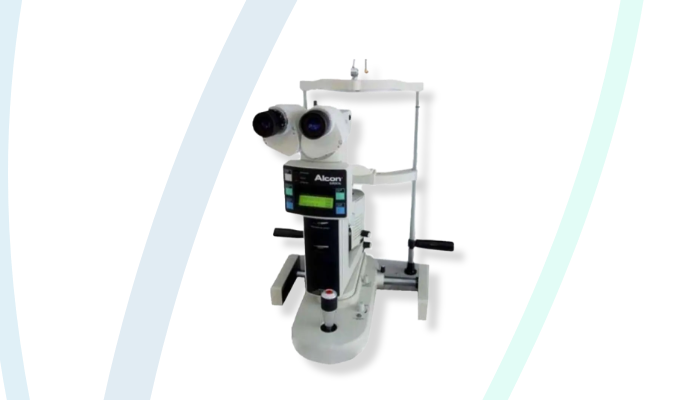

Láser oftalmológico
YAG Láser
Es una herramienta especialmente eficaz en oftalmología. Permite intervenir a distancia en el interior del ojo como un bisturí de altísima precisión. Es utilizado principalmente para capsulotomía posterior e iridotomía.